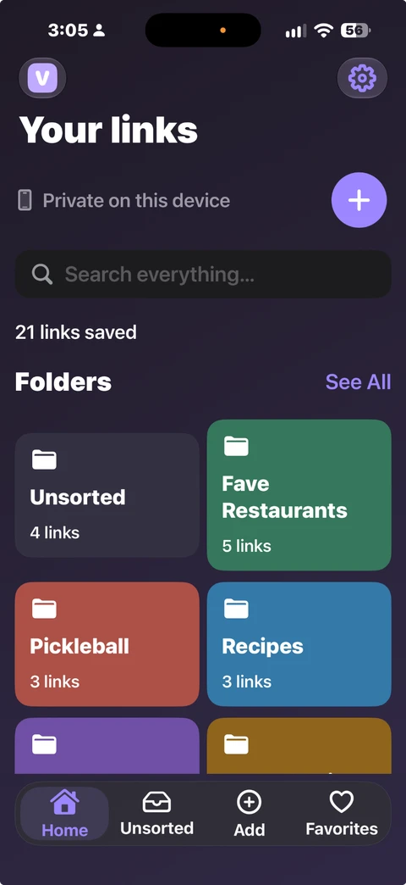
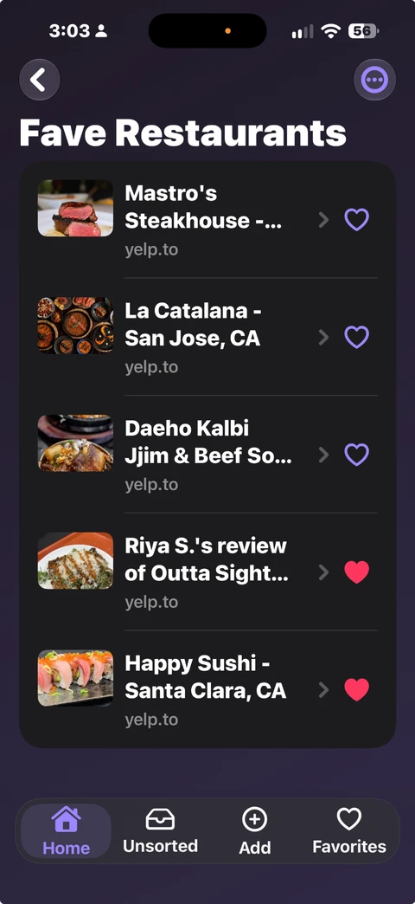
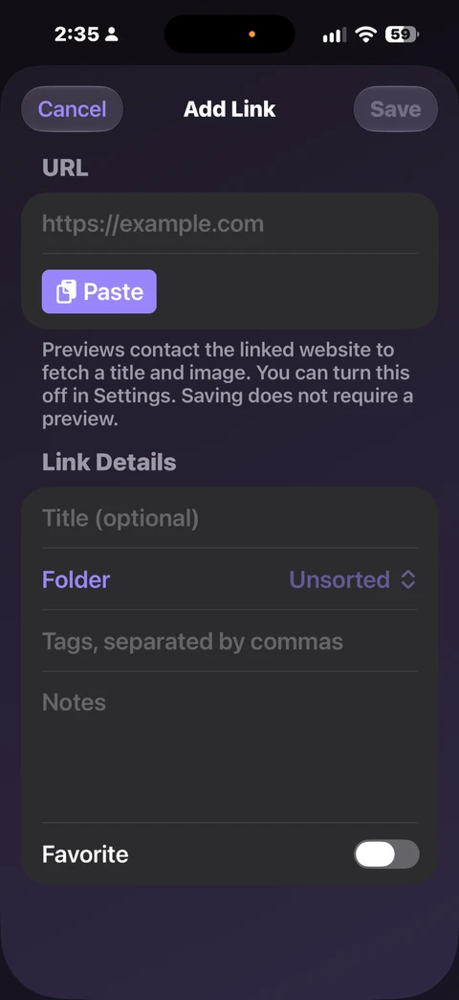
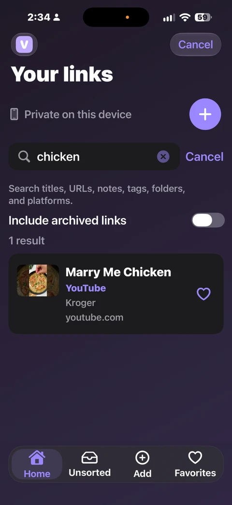
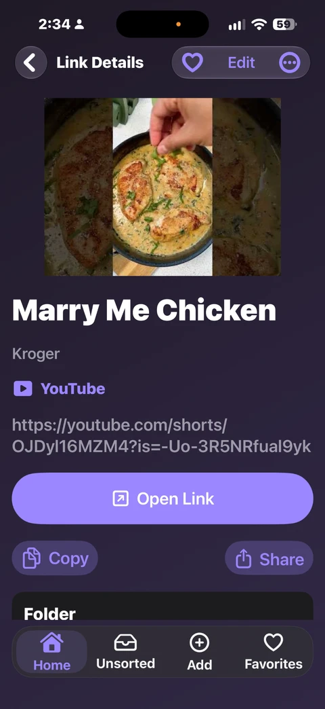
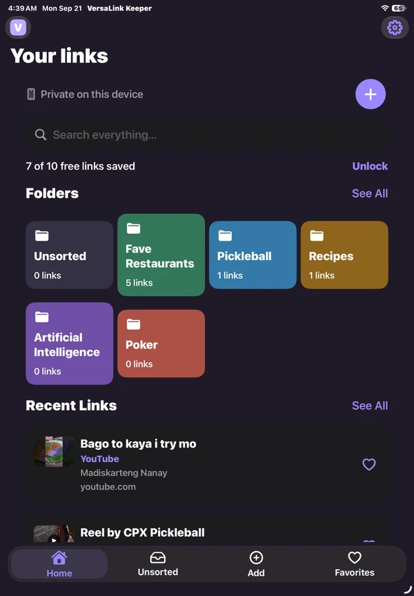

{kind=link}
{kind=link}
{kind=link}
{kind=link}
{kind=link}
A folder for every interest
Restaurants, recipes, trips, hobbies—make colored folders for whatever you save. Reorder folders so the ones you use most appear first.
Every useful link.
A place to keep it.
That restaurant you want to try. The recipe you’ll make again. A video worth coming back to. Save your finds, organize them your way, and find them when you need them.
Preparing for App Store release.

A look inside
Actual screens from VersaLink Keeper. Scroll through the gallery or select a screen to see it larger.




More than a list of URLs
Restaurants, recipes, trips, hobbies—make colored folders for whatever you save. Reorder folders so the ones you use most appear first.
Add your own title, notes, and tags. Tap the heart to keep a link in Favorites. Unsorted holds links until you choose a folder.
Find links by title, URL, notes, tags, folder, or platform. Include archived links when you want to look further back.
See a title and thumbnail when the source provides them. Supported YouTube videos can include a channel name; other sites and social previews vary.
Your bookmarks live on your device. No VersaLink Keeper account, advertising, or analytics. Automatic previews can be turned off in Settings.
Export JSON backups or CSV files for free. The lifetime unlock adds JSON import and the ability to restore local recovery copies.
From a good find to a saved link
Find something worth keeping in your browser or another app, then copy its URL.
Tap Add, paste the link, and choose a folder. Need a new folder? Create one right there without losing your draft.
Browse your folders, check Favorites, or search for the detail you remember.
A little more room
Browse your folders and saved links on a bigger screen, with the same tools for organizing, searching, and adding a new find.
Each device keeps its own collection. To move your links, export a JSON backup and import it on the other device with the lifetime unlock. Collections do not automatically sync.
How backup and restore work
Start free. Keep more.
Try the app with 10 saved links. Choose the lifetime unlock when you want room for more.
Free
$0
Lifetime unlock
US$9.99One-time purchase
No subscription. Regional prices and taxes may vary. Apple shows the final price before you confirm.
Import and recovery restore replace your current collection; they do not merge collections. Restoring a purchase unlocks features but does not restore saved links.